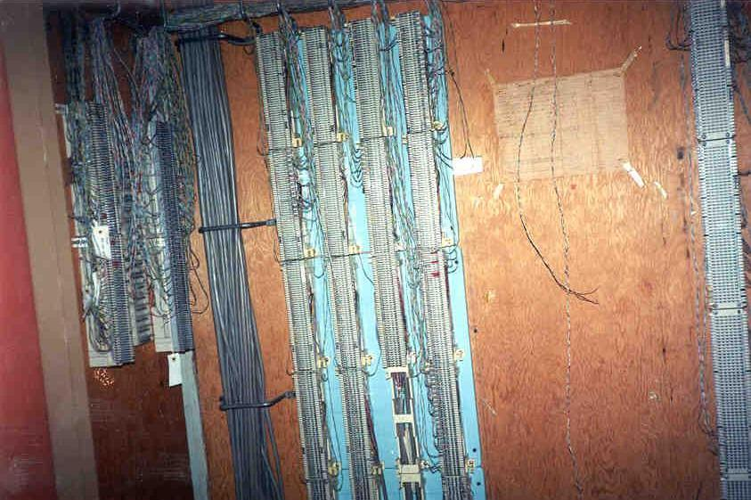
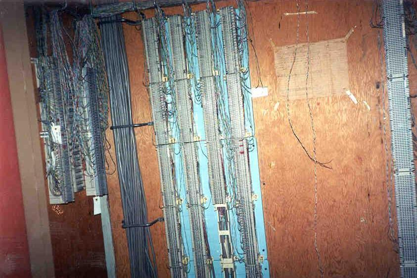

The upper floors--all nine of them--contain hundreds of rooms: offices, bedrooms, bathrooms, linen closets, utility closets, furnace rooms, cafeterias. They're all in excellent condition, with intact windows providing excellent views. Some are amazingly preserved, with curtains and clean walls and floors that look like they've just been vacuumed. Others have the ceilings caving in.
One of the weirdest places was the cafeteria, which features a long counter and a big office building-style mess hall. Since the place was originally used as a hotel you have to wonder if it was originally meant to be this.
Before I die, I want to play paintball in the Seneca Hotel. Of course now that I've announced it here they'll probably install special anti-paintball robots or something.
At the north end of the building were the elevators, old-fashioned ones with an interesting feature: the mail drop out front.
As I explained earlier, homeless people live up here. But they stick mainly to the third floor from what I and others I've spoken to have experienced.
The weirdest thing about the whole building was the number of birds who have died in there. Every room seemed to have a bird skeleton on the floor. Maybe it's part of some elaborate satanic ritual.


 
